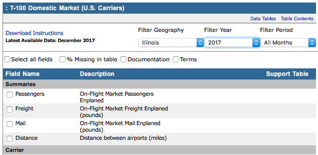

Data
The data utilized was chosen by the professor of the course, Dr. Andy Johnson.
For the application, we created bar charts and pie charts using the ggplot library once the data was processed into R Studio.
Manipulation of Data:
- The data was cleaned and reduced by python script given by Professor Johnson. This script allowed us to turn CSV files to TSV files, with various lookup codes added.
- For the Intereseting Days section, we were given more freedom, so we choose date datas in which we were familiar with: Christmas, Thanksgiving, New Year's Day. These are occasions that would increase definetly require someone to take a flight.
- For the graduate section, an additional data set was taken from the Bureau of Transporation Statistics, Datasets, in which the data is presented the same way as Professor Johnson, but further more variables like pasanger, distance, class, etc. It let us even specify the geographic location and click on each individual catagory variable to create a custom table for our requirements. This gave us a wide range of possible implementations of this data and how we can merge them into our project. 
- For the Top 50 Aiports section, we pooled the airport data from both O'hare and Midway and then pulling Top 50 airports from the pooled data. This way we are visualizing the data at state level and compare it national level with other airports like LAX, ATL, HOU, etc.
Libraries used:
___________________________________________________________________________________________________________________
Insights on How to Use
- The application is broken into 11 sub menu items with two helper items: About and Settings
- You select on the item you want and have options on top of each page which render the page
- You have the option to change the units (Mile/Kilometer) and time format (24 hour/12 hour)
- Each menu item is unique and come with a variety of premises that you can choose from: Airport, Time, type of sort, delay, specific time, airline, etc.
Below is the menu system we have made to organize our tabs


Example#1: Find all the given flights in a choosen date with delay data


Example#2: Find Arrivals and Departures for both airports (Hourly/Monthly).